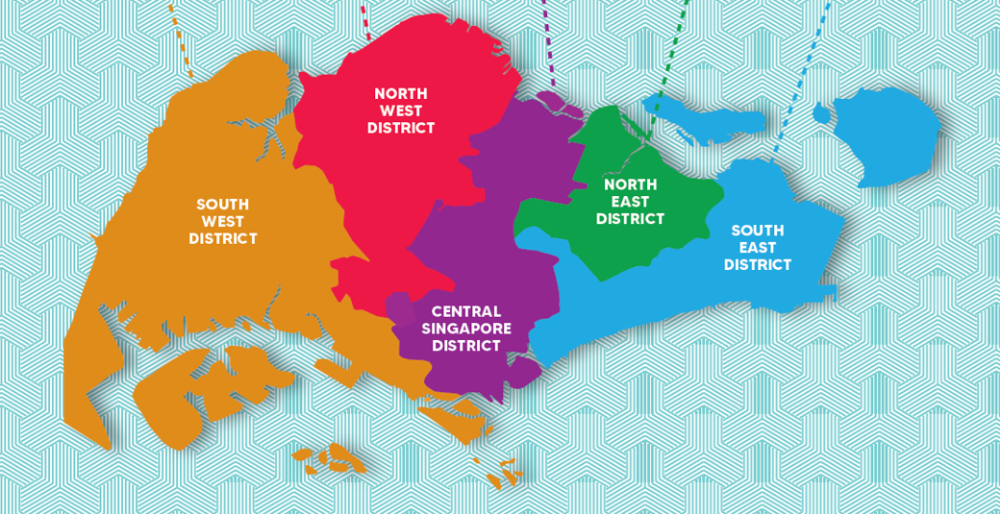
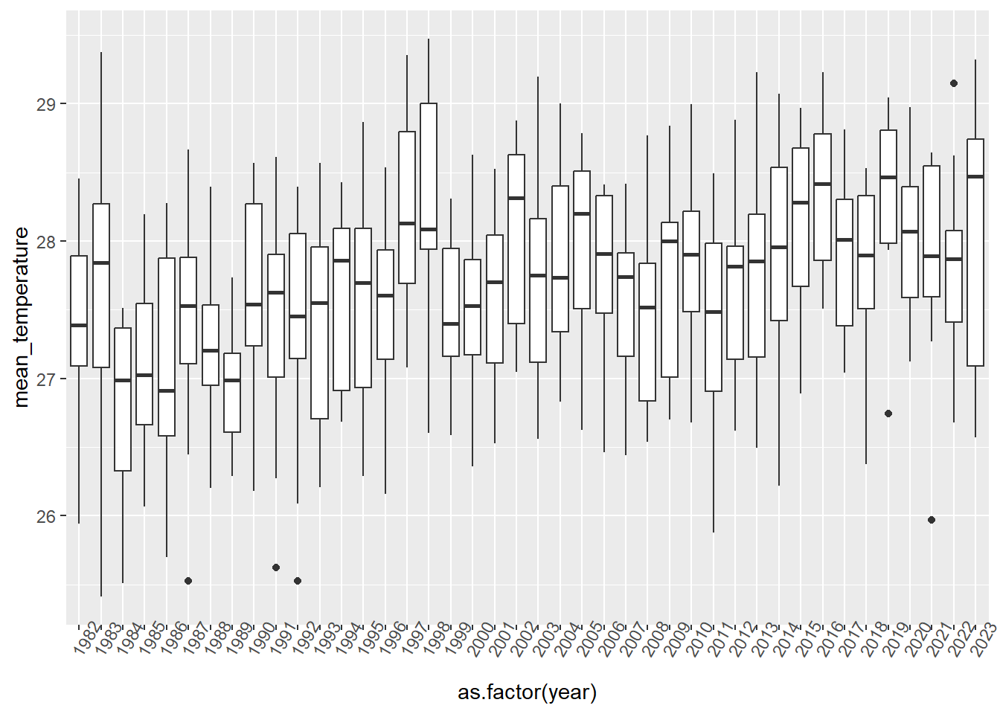
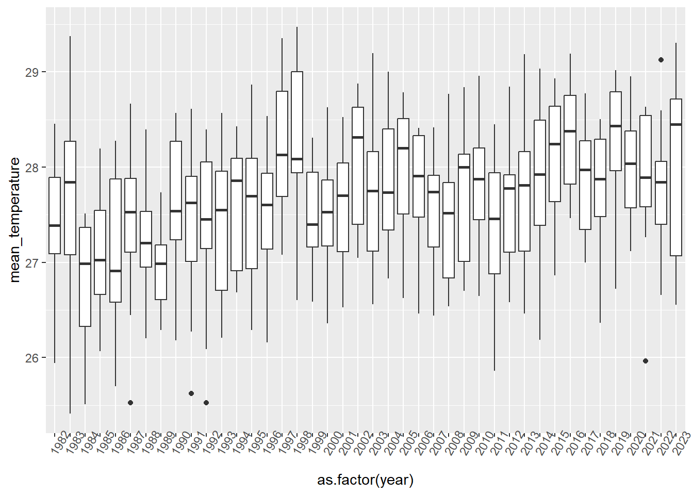
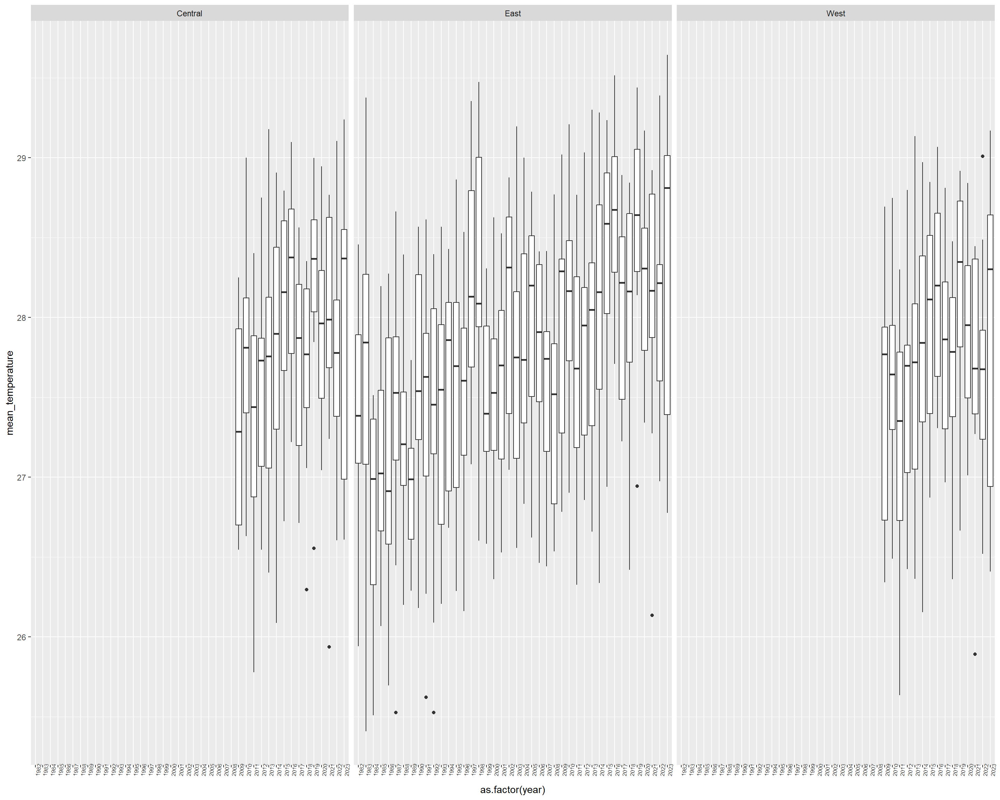
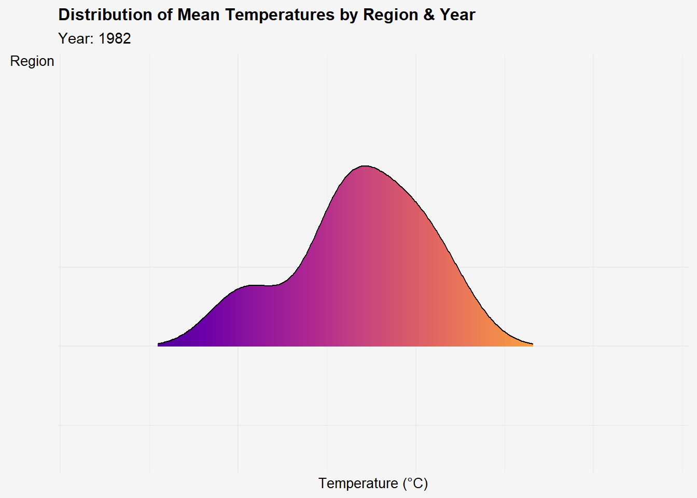

pacman::p_load(readr, dplyr, purrr, naniar,kableExtra,
tidyverse, DT, ggplot2, patchwork,
ggridges, ggdist, ggstatsplot,
plotly, ggiraph, DT, ggdist,
ungeviz, crosstalk,
viridis, gganimate)Take-Home_Ex04: Rain, Hail or Shine: Unveiling Mysteries of the Sky
Working Document for Project Work
1 Overview
In this take home exercise, we will
2 Data Preparation
2.1 Loading R Packages
In this take home exercise, the following R packages will be used:
The code chunk used is as follows:
2.2 Importing Weather Data
The data sets will be downloaded from historical daily temperature from Meteorological Service Singapore website,
filter by rain, and temp, load as rds file for faster data wrangling
read rds file
all_data <- read_csv("data/daily_historical.csv")
rain_data <- all_data %>%
select(station, year, month, day, daily_rainfall_total, highest_30_min_rainfall, highest_60_min_rainfall, highest_120_min_rainfall)
write_rds(rain_data, "data/rain_data.rds")
temp_data <- all_data %>%
select(station, year, month, day, mean_temperature, maximum_temperature, minimum_temperature)
write_rds(temp_data, "data/temp_data.rds")3 Aggregating weather stations by regions

temp_data <- read_rds("data/temp_data.rds")
temp_data <- temp_data %>%
mutate(region = case_when(
(station == "Changi" | station == "East Coast Parkway" | station == "Tai Seng") ~ "East",
(station == "Clementi" | station == "Tuas South" | station == "Choa Chu Kang (South)" | station == "Jurong (West)" | station == "Jurong Island" | station == "Admiralty") ~ "West",
(station == "Ang Mo Kio" | station == "Newton" | station == "Sentosa Island") ~ "Central"
))
write_rds(temp_data, "data/temp_data.rds")4 Temperature Data EDA
temp_data <- read_rds("data/temp_data.rds")
glimpse(temp_data)Rows: 329,156
Columns: 8
$ station <chr> "Macritchie Reservoir", "Macritchie Reservoir", "M…
$ year <dbl> 1980, 1980, 1980, 1980, 1980, 1980, 1980, 1980, 19…
$ month <dbl> 1, 1, 1, 1, 1, 1, 1, 1, 1, 1, 1, 1, 1, 1, 1, 1, 1,…
$ day <dbl> 1, 2, 3, 4, 5, 6, 7, 8, 9, 10, 11, 12, 13, 14, 15,…
$ mean_temperature <dbl> NA, NA, NA, NA, NA, NA, NA, NA, NA, NA, NA, NA, NA…
$ maximum_temperature <dbl> NA, NA, NA, NA, NA, NA, NA, NA, NA, NA, NA, NA, NA…
$ minimum_temperature <dbl> NA, NA, NA, NA, NA, NA, NA, NA, NA, NA, NA, NA, NA…
$ region <chr> NA, NA, NA, NA, NA, NA, NA, NA, NA, NA, NA, NA, NA…5 Data Wrangling
5.1 Summary Statistics of Data
finding how many missing data
sum(is.na(temp_data))[1] 980485dropping those with missing data
temp_data <- temp_data %>% drop_na()checking data for missing data again
sum(is.na(temp_data))[1] 05.2 Aggregating the Mean, Min and Max Temperatures by Month
finding the average, as well as the min and max temperatures by region-month-year
monthly_temp_data <- aggregate(mean_temperature ~ year + month, data = temp_data, FUN = mean)monthly_mean_temp <- aggregate(mean_temperature ~ region + year + month, data = temp_data, FUN = mean)monthly_min_temp <- aggregate(minimum_temperature ~ region + year + month, data = temp_data, FUN = min)monthly_max_temp <- aggregate(maximum_temperature ~ region + year + month, data = temp_data, FUN = max)combining the data together
merged_temp <- monthly_mean_temp %>%
left_join(monthly_max_temp, by = c("region", "year", "month")) %>%
left_join(monthly_min_temp, by = c("region", "year", "month"))
glimpse(merged_temp)Rows: 856
Columns: 6
$ region <chr> "East", "East", "East", "East", "East", "East", "E…
$ year <dbl> 1982, 1983, 1984, 1985, 1986, 1987, 1988, 1989, 19…
$ month <dbl> 1, 1, 1, 1, 1, 1, 1, 1, 1, 1, 1, 1, 1, 1, 1, 1, 1,…
$ mean_temperature <dbl> 25.94194, 26.45161, 25.50968, 26.58387, 25.69677, …
$ maximum_temperature <dbl> 31.9, 32.1, 31.7, 33.0, 31.4, 31.4, 33.1, 32.8, 32…
$ minimum_temperature <dbl> 21.9, 23.0, 21.2, 22.2, 21.5, 22.1, 23.2, 22.6, 22…Distribution of mean temperature
ridge_plot <- ggplot(monthly_temp_data, aes(x = mean_temperature, y=factor(year), fill = stat(x))) +
geom_density_ridges_gradient(scale =2,rel_min_height = 0.01, gradient_lwd = 1.) +
scale_y_discrete(name= NULL)+
scale_fill_viridis_c(name = "°C", option = "C") +
labs(title = 'temperature profile',
subtitle = 'Distribution of daily mean temperature across years',
x = "Temperature (°C)",
y = "Year") +
theme_ridges(font_size = 13, grid = TRUE) +
theme(plot.title = element_text(size = 14),
plot.subtitle = element_text(size = 10),
axis.title.x = element_text(size = 8),
axis.title.y = element_text(size = 8, angle = 360))
ridge_plot
Distribution of mean temperature
box_plot <- ggplot(monthly_temp_data,
aes(y= mean_temperature,
x = as.factor(year))) +
geom_boxplot()+
theme(axis.text.x = element_text(angle = 60))
box_plot
Distribution of mean temperature
box_plot_m <- ggplot(merged_temp,
aes(y= mean_temperature,
x = as.factor(year))) +
geom_boxplot()+
facet_wrap(~ region) +
theme(axis.text.x = element_text(angle = 85,
size = 6))
box_plot_m
Note
from the output above, we can tell that Changi station, is the only station with temp data from 1982 to 2008. thus, the average singapore temp will be equals to the changi’s data. WIth this mind, we may exclude the 1982 to 2008 data for better comparison.
Distribution of mean temperature
violin_plot <- plot_ly(data = monthly_temp_data, x = ~year, y = ~mean_temperature, type = 'violin',
split = ~year,
box = list(visible = T),
meanline = list(visible = T)) %>% # Adds a box plot inside the violin for summary statistics
layout(title = list(text = "<b>Distribution of Mean Temperatures Across Years</b>",
font = list(family = "Arial", size = 14),
xanchor = "center", xref = "paper",
yanchor = "middle", yref = "paper"),
yaxis = list(title = list(text = "Temperature (°C)",
font = list(family = "Arial", size = 12)) ),
xaxis = list(title = list(text = "Year",
font = list(family = "Arial", size = 12)) ))
violin_plot# Base density plot
ggplot(data = merged_temp,
aes(x = mean_temperature,
y = region,
fill = after_stat(x))) +
geom_density_ridges_gradient(scale = 3,
rel_min_height = 0.01) +
scale_fill_viridis_c(name = "Colour Scale",
option = "C") +
theme_minimal() +
labs(title = "Distribution of Mean Temperatures by Region & Year",
subtitle = "Year: {closest_state}",
y = "Region",
x = "Temperature (°C)") +
theme(legend.position="none",
plot.title = element_text(face = "bold", size = 12),
axis.title.x = element_text(size = 10),
axis.title.y = element_text(hjust=1, angle=0, size = 10),
axis.text = element_text(size = 8),
plot.background = element_rect(fill = "#f5f5f5", color = "#f5f5f5")) +
transition_states(year) +
ease_aes('linear')
6 Rain Data EDA
rain_data <- read_rds("data/rain_data.rds")
glimpse(rain_data)Rows: 329,156
Columns: 8
$ station <chr> "Macritchie Reservoir", "Macritchie Reservoir…
$ year <dbl> 1980, 1980, 1980, 1980, 1980, 1980, 1980, 198…
$ month <dbl> 1, 1, 1, 1, 1, 1, 1, 1, 1, 1, 1, 1, 1, 1, 1, …
$ day <dbl> 1, 2, 3, 4, 5, 6, 7, 8, 9, 10, 11, 12, 13, 14…
$ daily_rainfall_total <dbl> 0.0, 0.0, 0.0, 0.0, 22.6, 49.6, 2.4, 0.0, 0.0…
$ highest_30_min_rainfall <dbl> NA, NA, NA, NA, NA, NA, NA, NA, NA, NA, NA, N…
$ highest_60_min_rainfall <dbl> NA, NA, NA, NA, NA, NA, NA, NA, NA, NA, NA, N…
$ highest_120_min_rainfall <dbl> NA, NA, NA, NA, NA, NA, NA, NA, NA, NA, NA, N…6.1 Summary Statistics of Data
finding how many missing data
sum(is.na(rain_data))[1] 598594dropping those with missing data
rain_data <- rain_data %>% drop_na()checking data for missing data again
sum(is.na(rain_data))[1] 07 Static Data Visualisation
Note
8 Interactive Data Visualisation
Note
Note